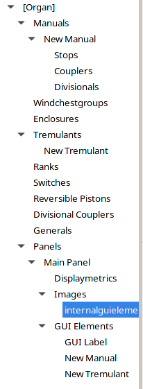

This page provides a brief description of the objects that define an ODF. For more information on how to use these objects see the Getting Started page. Objects are separated into functional objects, GUI objects, and pipes.
GOODF creates and organizes objects to create a .organ file that can be loaded by GrandOrgue. The objects appear in a tree view on the left side of the GOODF window as shown in the picture:

The following bullets describe the available objects and their relationship to one another. There are also links to a complete description of all the parameters associated with each object:
Organ: The Organ is the top level object and there can only be one per .organ file. All other objects fall under Organ.
Manuals: The Manuals are created for each keyboard (including the Pedal Clavier). Stops, Couplers, and Divisional objects are created as subsidiary objects to the manual. The manual references Switches and Tremulants that are associated with it so that Divisionals can control these Switches and Tremulants.
Stops are Objects that turn on or off ranks of pipes. They can either act directly or be controlled by switches. Stops can have an internal Rank of pipe samples, or can reference one or more external ranks.
Couplers take key presses on the Keyboard they are associated with and forward them to another keyboard at the same pitch, or a higher or a lower pitch. They can also forward key presses to the same keyboard or disable their own keyboard with a ‘Unison Off’ function. Couplers either act directly or can be controlled by switches
Divisionals are memory storage elements, typically part of a combination action to store and recall the on/off state of each stop, coupler, tremulant, and switch associated with or referenced by the manual under which it is defined.
Windchestgroups are an analogy to the chest that real pipes are mounted on. Each Rank associates itself with a windchestgroup. Each windchestgroup references one or more Tremulants or expression Enclosures.
Enclosures are a mechanism to to change the volume, and in some cases the high frequencies of the pipes mounted on a windchestgroup. Enclosures are referenced by one or more windchestgroups. Enclosures are controlled by Swell Pedals or sliders added to a Panel.
Tremulants are a mechanism to introduce a slow periodic variation in pitch and amplitude to the sound of a rank of pipes. Tremulants are referenced by windchestgroups and by manuals.
Ranks are collections of pipes with the same sound. Ranks are not directly controlled, but can be referenced by stops. Ranks can also be defined within a stop as subsidiary to it.
Pipes are the individual sound samples used to create a rank. Pipes are referenced by ranks, and can include attack samples, release samples, and tremulant samples. Some editing of individual and group of pipe sample parameters can be had by right clicking in the expanded pipe tree. See Using GOODF for more information on working with samples
Switches are objects used to control other objects using combinational logic. Switches can be made visible so they appear to the user as stop knobs and can be referenced by tremulants, manuals, and stops. See Using GOODF for more information on why and how to use switches.
Reversible Pistons are like Divisionals or Generals, but they behave as binary latches. Press it once to activate, then press again to deactivate. Reversible pistons reference one instance of a stop, coupler, Switch, or Tremulant. If it references a stop or a coupler it must also reference a manual, but GOODF takes care of the manual reference Automatically.
Divisional Coupler is an object which when active allows a Divisional on one manual to activate the Corresponding Divisional on the other referenced manuals. The Divisional coupler references one or more manuals.
Generals are memory storage elements that are like divisionals, except they can apply their action to the whole organ, not just one Manual. As such they are not referenced by nor do they reference a manual. They can reference stops, couplers, tremulants, and switches.
GUI objects can be created from many of the functional objects above and displayed on one or more panels. GUI objects can use graphical elements built into the GrandOrgue software, or can use images you create yourself. Thus for example, custom keyboards, pedals, Stop knobs, and sliders or expression pedals can be created. For more information on how to create GUI Objects and Panels, see Creating your Organ GUI.
Available GUI objects are as follows:
Panel refers to an independent window that can be opened or closed from the GrandOrgue main application window’s Panel menu. At a minimum, a Main panel is required. Often other panels with, for example, left and right side stop knob arrays are also created. A functional object can be represented by a GUI object on more than one panel. Since GrandOrgue includes many default panels, for example for couplers, generals, Divisionals, the number you may wish to create will usually be limited.
By clicking on the Main Panel entry, Available Organ Elements and Available Setter elements can be selected to create GUI elements. Available Organ elements are the Objects such as manuals, stops, tremulants, switches, and enclosures that you created. Available Setter elements are objects predefined in GrandOrgue that can be placed on panels as GUI elements. Of particular import if you are using generals or divisionals, are the Set element and the GC (general cancel) elements. Once you have selected an element, and clicked “create a GUI element of any selected element above” you will see a new GUI element appear in the list at the left
Different types of element have different parameters. For example, for keyboards and pedals you can choose a few variations of standard displays. For enclosures, you can pick one of several predefined swell pedals, and for stops and generals, several styles of predefined knobs and buttons.
You can also define your own GUI element appearance using your own images. For example, you may want an enclosure to appear as a slider rather than as a swell pedal. In that case a series of bitmap images are referenced, one for each of the up to 127 positions for the enclosure object.
Images are separate GUI elements that can be placed on the panel.
Labels are separate GUI elements that can be placed on the panel
Each rank object (either internal to a stop, or separately defined) references one or more pipes. Each pipe has one or more .wav file samples associated with it. Alternatively A pipe in a rank can borrow one or more pipes from another stop (or more correctly from a rank internally defined by a stop object). It cannot borrow from another rank.
Pipe samples are generally stored in a directory structure with each sample labeled with its midi note number. In this case these samples can easily be associated with the pipes in a rank by telling GOODF to look in the proper directory on your computer. Samples have the following variations:
attack samples include the initial transient when a pipe receives wind, as well as a sustain section defined by a loop which continues as long as the pipe is sounding
One or more release samples include the transient sound of the pipe when air is cut off, as well as the reverberation of the room in which the sample is taken. In simple sample sets the release sample is included in the attack .wav file. In more complicated sample sets two or more sub-directories will define multiple release samples. The sample to be used depends on how long the manual key operating the pipe is held down
Tremulant samples may be available which sample the same pipe with its tremulant engaged. Tremulant samples will include their own sets of releases.
Many sample sets now come in surround sound where pipes are sampled at different positions in the room, for example, direct, near, and far samples. Suggestions for how to deal with these are found in the Using GOODF section. More information can be found in pipes.
Recording and preparing the sample files is outside the scope of GOODF. However other software to assist with this is available, as are web based tutorials on the sampling process, noise reduction, and adding loop and release markers.